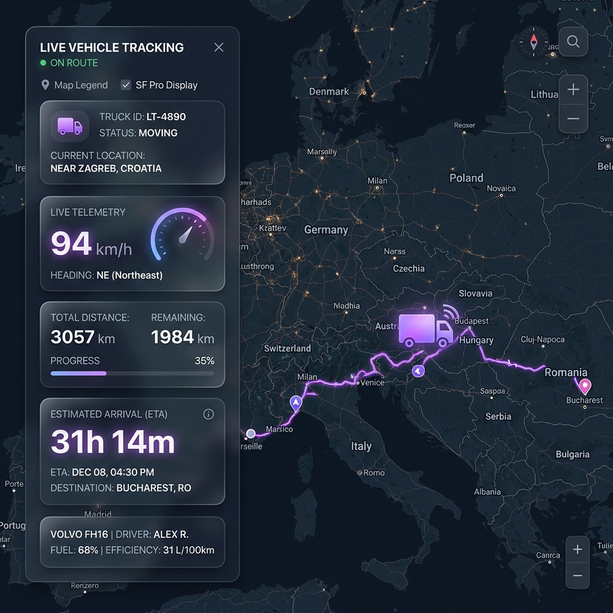
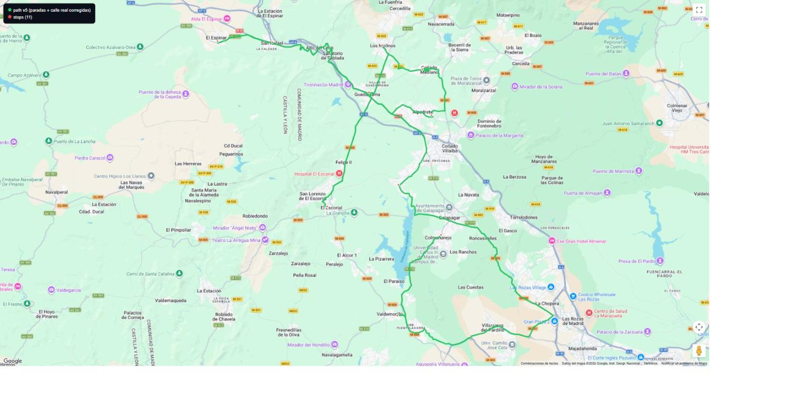
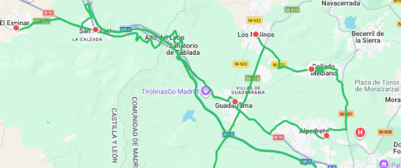
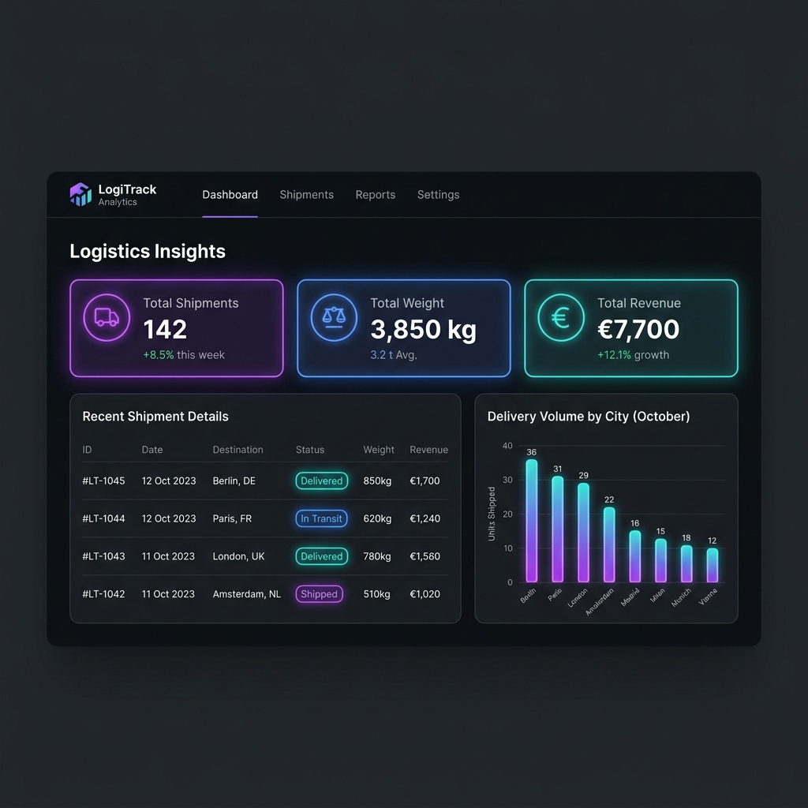

Cuaderno de aprendizaje paso a paso para comprender, adaptar y reutilizar todas las características técnicas desarrolladas en tus próximos proyectos.
Este módulo implementa el seguimiento en tiempo real del vehículo de reparto entre España y Rumanía. Incluye cálculo matemático de rumbo (*heading*), animación fluida de fotogramas, conmutador de dirección de ruta y visualización en pantalla completa.

Para rotar la dirección del camión según avanza por las curvas de la carretera, usamos trigonometría esférica entre las coordenadas iniciales (lat1, lng1) y finales (lat2, lng2):
// Cálculo del ángulo de dirección en grados (0° a 360°)
function calculateHeading(lat1, lng1, lat2, lng2) {
const dLng = (lng2 - lng1) * (Math.PI / 180);
const lat1Rad = lat1 * (Math.PI / 180);
const lat2Rad = lat2 * (Math.PI / 180);
const y = Math.sin(dLng) * Math.cos(lat2Rad);
const x = Math.cos(lat1Rad) * Math.sin(lat2Rad) -
Math.sin(lat1Rad) * Math.cos(lat2Rad) * Math.cos(dLng);
const heading = Math.atan2(y, x) * (180 / Math.PI);
return (heading + 360) % 360;
}Garantiza un movimiento continuo sin tirones a 60 fps en lugar de saltar entre coordenadas fijas:
let progress = 0;
let currentIndex = 0;
function animateMarker(marker, routePoints, speed = 0.015) {
function loop() {
if (currentIndex >= routePoints.length - 1) currentIndex = 0;
const p1 = routePoints[currentIndex];
const p2 = routePoints[currentIndex + 1];
progress += speed;
if (progress >= 1.0) { progress = 0; currentIndex++; }
// LERP de posición
const lat = p1.lat + (p2.lat - p1.lat) * progress;
const lng = p1.lng + (p2.lng - p1.lng) * progress;
marker.setPosition(new google.maps.LatLng(lat, lng));
// Actualizar rotación del icono de camión
const heading = calculateHeading(p1.lat, p1.lng, p2.lat, p2.lng);
marker.setIcon({
path: google.maps.SymbolPath.FORWARD_CLOSED_ARROW,
scale: 5,
fillColor: '#8B5CF6',
rotation: heading
});
requestAnimationFrame(loop);
}
loop();
}Este mismo motor LERP funciona para cualquier ruta GPS (gpx, geojson, kml) en proyectos de logística, deliveries, juegos en HTML5 o rastreadores de flotas en vivo.
Las rutas locales de fin de semana (window.LOCAL_ROUTES, en src/data/localRoutes.js) no usan la Directions API de Google, porque esa API no está habilitada en el proyecto — solo la Maps JavaScript API (visualización). En su lugar, el trazado path de cada ruta se calcula una única vez, offline, contra OSRM (Open Source Routing Machine, router.project-osrm.org), un motor de rutas gratuito basado en OpenStreetMap que no requiere API key.
Cada parada se localiza a mano en Google Maps y se copian sus coordenadas en formato sexagesimal (DMS). Antes de consultar a OSRM hay que convertirlas a grados decimales:
// "40°35'06.8"N 4°07'57.5"W" → { lat: 40.585222, lng: -4.132639 }
function dmsToDecimal(deg, min, sec, sign = 1) {
return sign * (deg + min / 60 + sec / 3600);
}
// Norte y Este son positivos; Sur y Oeste, negativos.
const escorial = {
lat: dmsToDecimal(40, 35, 6.8),
lng: dmsToDecimal(4, 7, 57.5, -1) // W = negativo
};En vez de pedirle a OSRM toda la ruta con las 11 paradas de golpe (lo que puede reordenar o simplificar el trazado), se calcula un tramo independiente por cada punto A → punto B, en el orden real de la ruta, y se van encadenando:
async function fetchSegment(a, b) {
const url = `http://router.project-osrm.org/route/v1/driving/${a.lng},${a.lat};${b.lng},${b.lat}?overview=full&geometries=geojson`;
const data = await fetch(url).then(r => r.json());
// data.routes[0].geometry.coordinates → [ [lng,lat], [lng,lat], ... ]
return data.routes[0].geometry.coordinates.map(([lng, lat]) => ({ lat, lng }));
}
// Encadena los tramos en orden, sin duplicar el punto de union
let fullPath = [];
for (let i = 0; i < paradas.length - 1; i++) {
const tramo = await fetchSegment(paradas[i], paradas[i + 1]);
if (fullPath.length > 0) tramo.shift(); // el ultimo punto del tramo anterior == el primero de este
fullPath = fullPath.concat(tramo);
}
// fullPath queda listo para asignarse a LOCAL_ROUTES['es-Sabado'].pathPrimera versión: OSRM unió Alpedrete → San Rafael en línea "óptima" (26,5 km) usando la autopista de peaje AP-6. Pero la ruta real del repartidor evita peajes y pasa por Guadarrama y el Puerto de Alto de León (N-VI, gratuita). La solución no es un flag de "sin peajes" — el servidor público de OSRM no lo soporta — sino forzar el tramo dividiéndolo en dos, insertando la coordenada de Guadarrama como vía-punto de paso (mismo lugar que la parada 2, pero sin marcador ni hora, solo para guiar el trazado):
// Antes: 1 tramo directo (26,5 km) -> usaba la AP-6 de peaje
// Después: 2 tramos encadenados a traves de Guadarrama (22,1 km, sin peaje)
const paradas = [
// ...Alpedrete,
{ lat: 40.6755, lng: -4.089861 }, // Guadarrama otra vez, solo de paso
// San Rafael...
];Auditoria posterior: recorrer los nombres de via (step.name en la respuesta de OSRM) de cada tramo en busca de "Autopista del Noroeste" (el nombre OSM de la AP-6) encontro un segundo tramo con el mismo problema. La vuelta real del repartidor es El Espinar -> San Rafael -> Alto de Leon -> A-6 -> Los Arroyos, asi que se repite la tecnica: dos vias-punto de paso mas (San Rafael y Guadarrama, sin marcador propio) entre las paradas 7 y 8.
Un motor de rutas siempre optimiza por distancia o tiempo, nunca conoce las preferencias reales del conductor (evitar peajes, calles concretas, etc.). Cuando el trazado automático no coincide con la ruta real, la solución más simple y fiable es forzar un vía-punto conocido (una parada, una rotonda, un puerto de montaña) partiendo ese tramo en dos llamadas a la API en vez de complicar los parámetros de la consulta.


Tabla final tras alinear stops (los marcadores con hora) con path (el trazado): mismas coordenadas exactas en ambos, mismo orden.
| # | Parada | Hora | Lat | Lng |
|---|---|---|---|---|
| 1 | Escorial | 12:30 | 40.585222 | -4.132639 |
| 2 | Guadarrama | 13:30 | 40.674972 | -4.089278 |
| 3 | Los Molinos | 14:00 | 40.711722 | -4.075667 |
| 4 | Collado Mediano | 14:30 | 40.693028 | -4.035333 |
| 5 | Alpedrete | 15:30 | 40.657111 | -4.024667 |
| 6 | San Rafael | 16:00 | 40.714361 | -4.189250 |
| 7 | El Espinar | 16:30 | 40.715306 | -4.245806 |
| 8 | Los Arroyos | 17:30 | 40.602500 | -4.058833 |
| 9 | Villanueva del Pardillo | 18:30 | 40.492056 | -3.962694 |
| 10 | Valdemorillo | 19:00 | 40.499639 | -4.059917 |
| 11 | Colmenarejo | 19:30 | 40.562889 | -4.014806 |
Distancia total: 137,57 km · Tiempo estimado: 173 min · Trazado: 4.616 puntos de carretera (v13: Valdemorillo->Colmenarejo ahora gira a la izquierda en Calle San Juan hacia la Carretera de Colmenarejo, como confirmo el usuario).
El bug real que motivó este trabajo: stops (los marcadores con hora) y path (la polyline) son dos arrays independientes — si se actualiza uno sin el otro, los marcadores quedan "flotando" lejos de la línea aunque el trazado en sí sea perfecto. Al reutilizar este patrón en otro proyecto, mantén siempre stops y los extremos de cada tramo de path generados a partir de las mismas coordenadas exactas, y evita mezclar en la misma lista paradas de la ruta con puntos que pertenecen a otro recorrido (en este caso, entregas a domicilio sueltas que no siguen la ruta principal).
Permite digitalizar automáticamente formularios manuscritos o impresos mediante la cámara del móvil o archivo de imagen, procesando la escena con filtros binarizados en HTML5 Canvas.
Convertimos el fotograma a blanco/negro de alto contraste para maximizar la tasa de éxito de Tesseract OCR:
function processCanvasFrame(videoEl, canvasEl) {
const ctx = canvasEl.getContext('2d');
canvasEl.width = videoEl.videoWidth;
canvasEl.height = videoEl.videoHeight;
ctx.drawImage(videoEl, 0, 0);
const imgData = ctx.getImageData(0, 0, canvasEl.width, canvasEl.height);
const data = imgData.data;
for (let i = 0; i < data.length; i += 4) {
const avg = (data[i] * 0.299 + data[i+1] * 0.587 + data[i+2] * 0.114);
const val = avg > 125 ? 255 : 0; // Binarización
data[i] = data[i+1] = data[i+2] = val;
}
ctx.putImageData(imgData, 0, 0);
return canvasEl.toDataURL('image/png');
}Garantiza respuesta de interfaz en 0ms guardando localmente en `LocalStorage` y emitiendo los datos vía WebSockets a PostgreSQL en Supabase.
// Suscripción Realtime WebSockets
supabase.channel('public:packages')
.on('postgres_changes', { event: '*', schema: 'public', table: 'packages' }, (payload) => {
if (payload.eventType === 'INSERT' || payload.eventType === 'UPDATE') {
saveLocalPackage(payload.new);
}
updateUI();
})
.subscribe();
function calculatePrice(weight, rates) {
const tier = rates.find(r => weight >= r.minWeight && (r.maxWeight === null || weight <= r.maxWeight));
if (!tier) return weight * 1.20;
return tier.type === 'fixed' ? tier.price : weight * tier.price;
}:root {
--font-heading: 'Outfit', 'Inter', sans-serif;
--font-mono: 'Fira Code', monospace;
--text-2xl: clamp(1.4rem, 1.25rem + 0.75vw, 1.65rem);
}
.price-tag, .cell-weight, .cell-bultos, .stat-card__value {
font-family: var(--font-mono);
font-variant-numeric: tabular-nums lining-nums;
}function exportCSV(data) {
const csv = '\uFEFF' + data.map(row => row.join(',')).join('\n');
const blob = new Blob([csv], { type: 'text/csv;charset=utf-8;' });
const link = document.createElement('a');
link.href = URL.createObjectURL(blob);
link.download = 'liquidacion.csv';
link.click();
}Este módulo implementa la fase completa de generación del Albarán Oficial A4 en PDF y su envío automático por correo electrónico mediante la API de Resend y funciones Serverless de Vercel.
Para evitar logos tenues o achatados en el PDF, la función imageToDataURL analiza los píxeles del lienzo HTML5, fuerza cada píxel no transparente a negro sólido 100% (RGB 0,0,0) y calcula dinámicamente el ratio de aspecto original (w / h):
function imageToDataURL(url, forceBlack = false) {
return new Promise((resolve) => {
const img = new Image();
img.crossOrigin = 'Anonymous';
img.onload = () => {
const canvas = document.createElement('canvas');
const w = img.naturalWidth || img.width;
const h = img.naturalHeight || img.height;
canvas.width = w; canvas.height = h;
const ctx = canvas.getContext('2d');
ctx.drawImage(img, 0, 0);
if (forceBlack) {
const imgData = ctx.getImageData(0, 0, w, h);
const data = imgData.data;
for (let i = 0; i < data.length; i += 4) {
if (data[i + 3] > 20) {
data[i] = 0; data[i + 1] = 0; data[i + 2] = 0; data[i + 3] = 255;
}
}
ctx.putImageData(imgData, 0, 0);
}
resolve({ dataUrl: canvas.toDataURL('image/png'), ratio: w / h });
};
img.src = url;
});
}
La función generateAlbaranPDFBase64() dibuja las secciones con primitivas vectoriales (doc.rect, doc.text), aplicando separaciones de 2.5mm entre barras de título y tablas, y renderiza el código QR en un recuadro blanco puro sin solapamiento:
// Renderizado del Logo con Ratio Natural Perfecto
const logoHeight = 14.5; // mm
const logoWidth = logoHeight * logoObj.ratio;
doc.addImage(logoObj.dataUrl, 'PNG', 14, 10, logoWidth, logoHeight);
// Separación de Secciones (2.5mm de margen limpio tras titular)
y += 8.5;
// Cuadro de Código QR 1:1 en Fondo Blanco Puro
doc.setFillColor(255, 255, 255);
doc.rect(161, y, 35, 25, 'FD');
doc.addImage(qrDataUrl, 'PNG', 171.25, y + 1.5, 14.5, 14.5);
doc.text('VERIFICACIÓN DIGITAL', 178.5, y + 19.4, { align: 'center' });